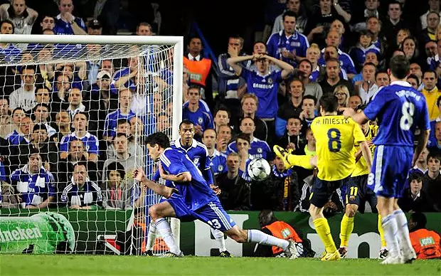
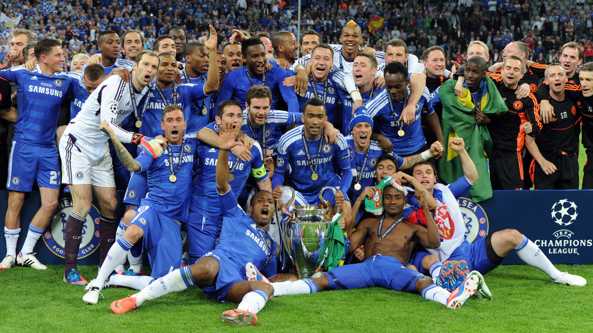
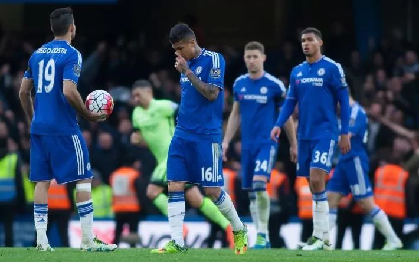
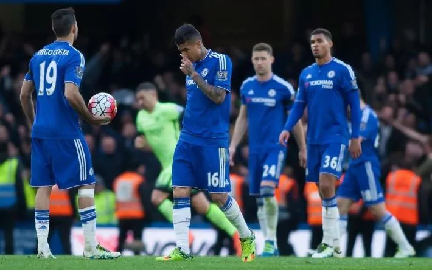

Chelsea FC
Witam na mojej stronie o Chelsea FC
Testowa zmiana
Od czego się zaczęło?
Pamiętny mecz przeciwko Barcelonie w 2009 roku...

A później zarówno wznosy jak i upadki.


I tak już od 8 lat. 
Zapraszam do zapoznania się z resztą strony.
Przydatne strony:
1. Oficjalna strona Chelsea FC 2. Polski serwis o Chelsea FC